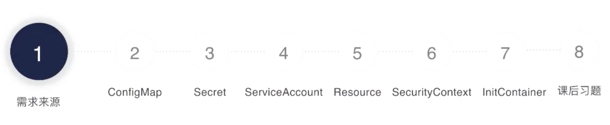
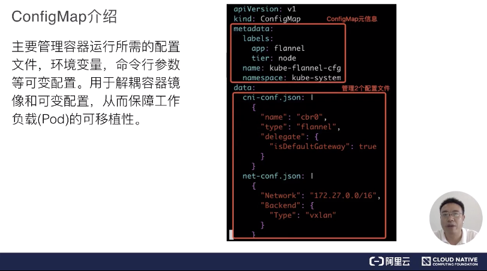
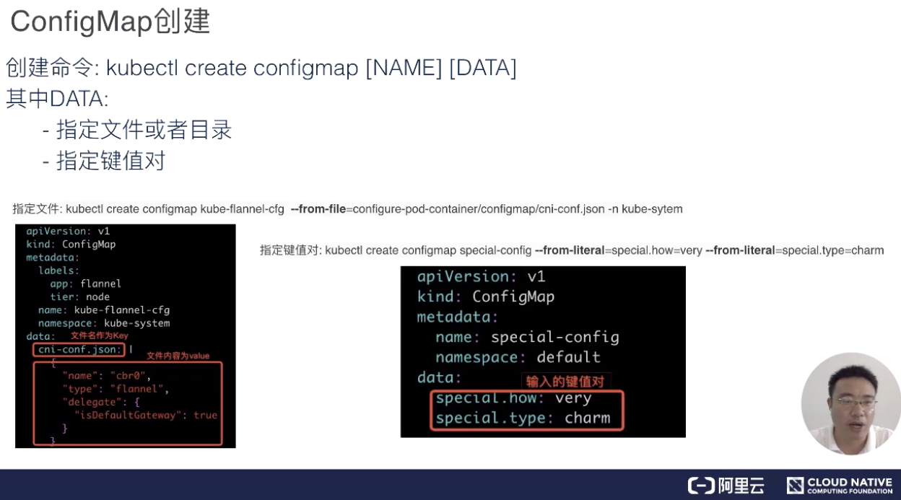
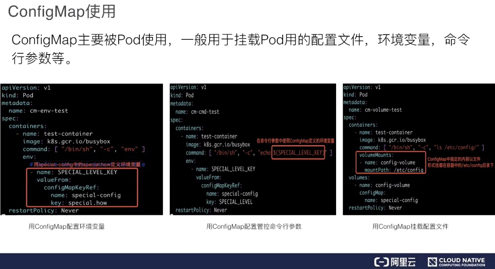
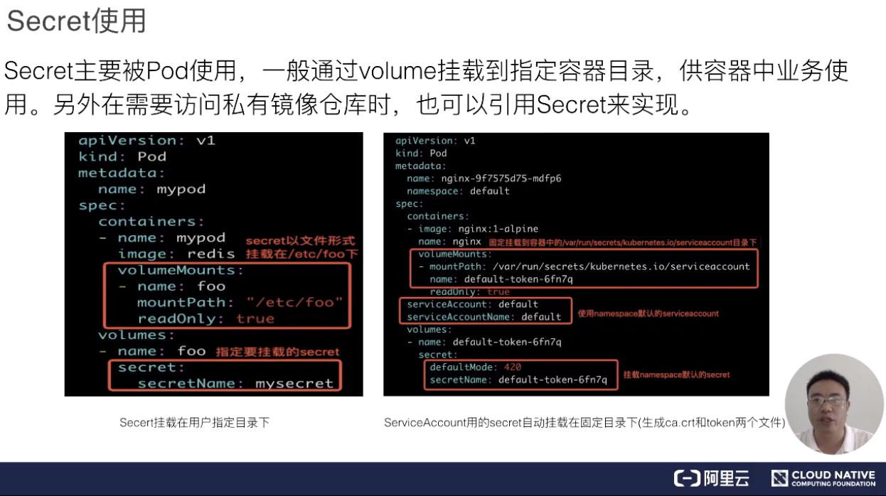
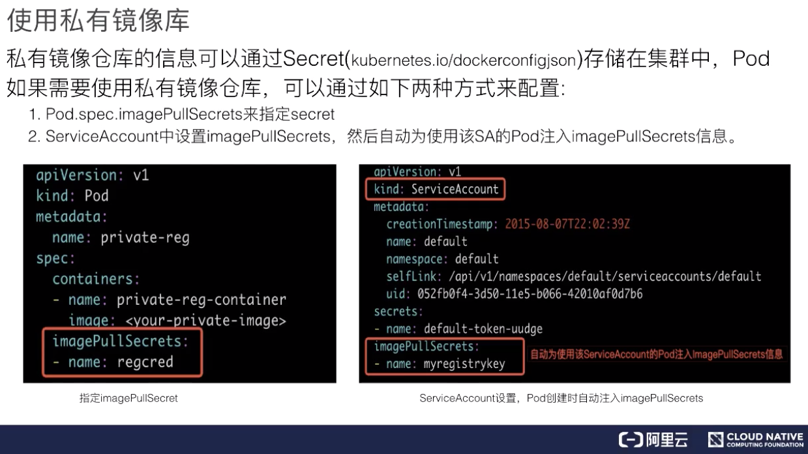
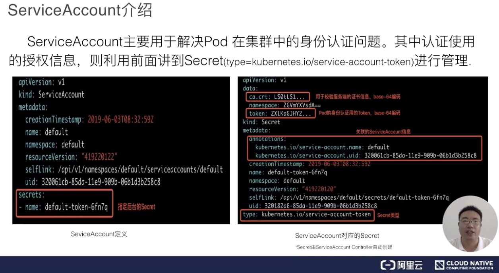
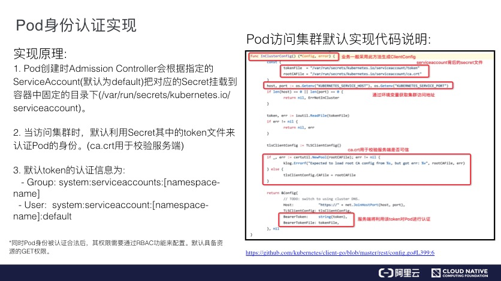
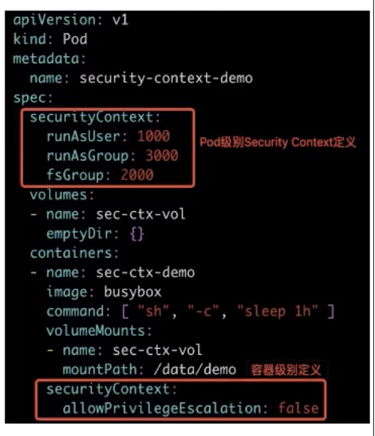

- 01 第一堂“云原生”课.md.html
- 02 容器基本概念.md.html
- 03 Kubernetes 核心概念.md.html
- 04 理解 Pod 和容器设计模式.md.html
- 05 应用编排与管理：核心原理.md.html
- 06 应用编排与管理.md.html
- 07 应用编排与管理：Job & DaemonSet.md.html
- 08 应用配置管理.md.html
- 09 应用存储和持久化数据卷：核心知识.md.html
- 10 应用存储和持久化数据卷：存储快照与拓扑调度(至天).md.html
- 11 可观测性：你的应用健康吗？（莫源）.md.html
- 12 可观测性-监控与日志（莫源）.md.html
- 13 Kubernetes 网络概念及策略控制（叶磊）.md.html
- 14 Kubernetes Service（溪恒）.md.html
- 15 从 0 开始创作云原生应用（殷达）.md.html
- 16 深入解析 Linux 容器（华敏）.md.html
08 应用配置管理
本节课程要点
- ConfigMaps 和 Secret 资源的创建和使用；
- Pod 身份认证的实现和原理；
- 容器资源、安全、前置校验等配置和使用。
细分为以下八个方面：

需求来源
背景问题
首先一起来看一下需求来源。大家应该都有过这样的经验，就是用一个容器镜像来启动一个 container。要启动这个容器，其实有很多需要配套的问题待解决：
- 第一，比如说一些可变的配置。因为我们不可能把一些可变的配置写到镜像里面，当这个配置需要变化的时候，可能需要我们重新编译一次镜像，这个肯定是不能接受的；
- 第二就是一些敏感信息的存储和使用。比如说应用需要使用一些密码，或者用一些 token；
- 第三就是我们容器要访问集群自身。比如我要访问 kube-apiserver，那么本身就有一个身份认证的问题；
- 第四就是容器在节点上运行之后，它的资源需求；
- 第五个就是容器在节点上，它们是共享内核的，那么它的一个安全管控怎么办？
- 最后一点我们说一下容器启动之前的一个前置条件检验。比如说，一个容器启动之前，我可能要确认一下 DNS 服务是不是好用？又或者确认一下网络是不是联通的？那么这些其实就是一些前置的校验。
Pod 的配置管理
在 Kubernetes 里面，它是怎么做这些配置管理的呢？如下图所示：
- 可变配置就用 ConfigMap；
- 敏感信息是用 Secret；
- 身份认证是用 ServiceAccount 这几个独立的资源来实现的；
- 资源配置是用 Resources；
- 安全管控是用 SecurityContext；
- 前置校验是用 InitContainers 这几个在 spec 里面加的字段，来实现的这些配置管理。
ConfigMap
ConfigMap 介绍
下面我们来介绍第一个部分，就是 ConfigMap。我们先来介绍 ConfigMap 它是用来做什么的、以及它带来的一个好处。它其实主要是管理一些可变配置信息，比如说我们应用的一些配置文件，或者说它里面的一些环境变量，或者一些命令行参数。
它的好处在于它可以让一些可变配置和容器镜像进行解耦，这样也保证了容器的可移植性。看一下下图中右边的编排文件截图。

这是 ConfigMap 本身的一个定义，它包括两个部分：一个是 ConfigMap 元信息，我们关注 name 和 namespace 这两个信息。接下来这个 data 里面，可以看到它管理了两个配置文件。它的结构其实是这样的：从名字看ConfigMap中包含Map单词，Map 其实就是 key:value，key 是一个文件名，value 是这个文件的内容。
ConfigMap 创建
看过介绍之后，再具体看一下它是怎么创建的。我们推荐用 kubectl 这个命令来创建，它带的参数主要有两个：一个是指定 name，第二个是 DATA。其中 DATA 可以通过指定文件或者指定目录，以及直接指定键值对，下面可以看一下这个例子。

指定文件的话，文件名就是 Map 中的 key，文件内容就是 Map 中的 value。然后指定键值对就是指定数据键值对，即：key:value 形式，直接映射到 Map 的key:value。
ConfigMap 使用
创建完了之后，应该怎么使用呢？

如上图所示，主要是在 pod 里来使用 ConfigMap：
- 第一种是环境变量。环境变量的话通过 valueFrom，然后 ConfigMapKeyRef 这个字段，下面的 name 是指定 ConfigMap 名，key 是 ConfigMap.data 里面的 key。这样的话，在 busybox 容器启动后容器中执行 env 将看到一个 SPECIALLEVELKEY 环境变量；
- 第二个是命令行参数。命令行参数其实是第一行的环境变量直接拿到 cmd 这个字段里面来用；
- 最后一个是通过 volume 挂载的方式直接挂到容器的某一个目录下面去。上面的例子是把 special-config 这个 ConfigMap 里面的内容挂到容器里面的 /etc/config 目录下，这个也是使用的一种方式。
ConfigMap 注意要点
现在对 ConfigMap 的使用做一个总结，以及它的一些注意点，注意点一共列了以下五条：
- ConfigMap 文件的大小。虽然说 ConfigMap 文件没有大小限制，但是在 ETCD 里面，数据的写入是有大小限制的，现在是限制在 1MB 以内；
- 第二个注意点是 pod 引入 ConfigMap 的时候，必须是相同的 Namespace 中的 ConfigMap，前面其实可以看到，ConfigMap.metadata 里面是有 namespace 字段的；
- 第三个是 pod 引用的 ConfigMap。假如这个 ConfigMap 不存在，那么这个 pod 是无法创建成功的，其实这也表示在创建 pod 前，必须先把要引用的 ConfigMap 创建好；
- 第四点就是使用 envFrom 的方式。把 ConfigMap 里面所有的信息导入成环境变量时，如果 ConfigMap 里有些 key 是无效的，比如 key 的名字里面带有数字，那么这个环境变量其实是不会注入容器的，它会被忽略。但是这个 pod 本身是可以创建的。这个和第三点是不一样的方式，是 ConfigMap 文件存在基础上，整体导入成环境变量的一种形式；
- 最后一点是：什么样的 pod 才能使用 ConfigMap？这里只有通过 K8s api 创建的 pod 才能使用 ConfigMap，比如说通过用命令行 kubectl 来创建的 pod，肯定是可以使用 ConfigMap 的，但其他方式创建的 pod，比如说 kubelet 通过 manifest 创建的 static pod，它是不能使用 ConfigMap 的。
Secret
Secret 介绍
现在我们讲一下 Secret，Secret 是一个主要用来存储密码 token 等一些敏感信息的资源对象。其中，敏感信息是采用 base-64 编码保存起来的，我们来看下图中 Secret 数据的定义。
元数据的话，里面主要是 name、namespace 两个字段；接下来是 type，它是非常重要的一个字段，是指 Secret 的一个类型。Secret 类型种类比较多，下面列了常用的四种类型：
- 第一种是 Opaque，它是普通的 Secret 文件；
- 第二种是 service-account-token，是用于 service-account 身份认证用的 Secret；
- 第三种是 dockerconfigjson，这是拉取私有仓库镜像的用的一种 Secret；
- 第四种是 bootstrap.token，是用于节点接入集群校验用的 Secret。
再接下来是 data，是存储的 Secret 的数据，它也是 key-value 的形式存储的。
Secret 创建
接下来我们看一下 Secret 的创建。
如上图所示，有两种创建方式：
- 系统创建：比如 K8s 为每一个 namespace 的默认用户（default ServiceAccount）创建 Secret；
- 用户手动创建：手动创建命令，推荐 kubectl 这个命令行工具，它相对 ConfigMap 会多一个 type 参数。其中 data 也是一样，它也是可以指定文件和键值对的。type 的话，要是你不指定的话，默认是 Opaque 类型。
上图中两个例子。第一个是通过指定文件，创建了一个拉取私有仓库镜像的 Secret，指定的文件是 /root/.docker/config.json。type 的话指定的是 dockerconfigjson，另外一个我们指定键值对，我们 type 没有指定，默认是 Opaque。键值对是 key:value 的形式，其中对 value 内容进行 base64 加密。创建 Secret 就是这么一个情况。
Secret 使用
创建完 Secret 之后，再来看一下如何使用它。它主要是被 pod 来使用，一般是通过 volume 形式挂载到容器里指定的目录，然后容器里的业务进程再到目录下读取 Secret 来进行使用。另外在需要访问私有镜像仓库时，也是通过引用 Secret 来实现。

我们先来看一下挂载到用户指定目录的方式：
- 第一种方式：如上图左侧所示，用户直接指定，把 mysecret 挂载到容器 /etc/foo 目录下面；
- 第二种方式：如上图右侧所示，系统自动生成，把 serviceaccount-secret 自动挂载到容器 /var/run/secrets/kubernetes.io/serviceaccount 目录下，它会生成两个文件，一个是 ca.crt，一个是 token。这是两个保存了认证信息的证书文件。
使用私有镜像库
下面看一下用 Secret 来使用私有镜像仓库。首先，私有镜像仓库的信息是存储在 Secret 里面的(具体参照上述的Secret创建章节)，然后拉取私有仓库镜像，那么通过下图中两种方法的配置就可以：
- 第一种方式：如下图左侧所示，直接在 pod 里面，通过 imagePullSecrets 字段来配置；
- 第二种方式是自动注入。用户提前在 pod 会使用的 serviceaccount 里配置 imagePullSecrets，Pod创建时系统自动注入这个 imagePullSecrets。

Secret 使用注意要点
最后来看一下 Secret 使用的一些注意点，下面列了三点：
- 第一个是 Secret 的文件大小限制。这个跟 ConfigMap 一样，也是 1MB；
- 第二个是 Secret 采用了 base-64 编码，但是它跟明文也没有太大区别。所以说，如果有一些机密信息要用 Secret 来存储的话，还是要很慎重考虑。也就是说谁会来访问你这个集群，谁会来用你这个 Secret，还是要慎重考虑，因为它如果能够访问这个集群，就能拿到这个 Secret。
如果是对 Secret 敏感信息要求很高，对加密这块有很强的需求，推荐可以使用 Kubernetes 和开源的 vault做一个解决方案，来解决敏感信息的加密和权限管理。
- 第三个就是 Secret 读取的最佳实践，建议不要用 list/watch，如果用 list/watch 操作的话，会把 namespace 下的所有 Secret 全部拉取下来，这样其实暴露了更多的信息。推荐使用 GET 的方法，这样只获取你自己需要的那个 Secret。
ServiceAccount
ServiceAccount 介绍
接下来，我们讲一下 ServiceAccount。ServiceAccount 首先是用于解决 pod 在集群里面的身份认证问题，身份认证信息是存在于 Secret 里面。

先看一下上面的左侧截图，可以看到最下面的红框里，有一个 Secret 字段，它指定 ServiceAccount 用哪一个 Secret，这个是 K8s 自动为 ServiceAccount 加上的。然后再来看一下上图中的右侧截图，它对应的 Secret 的 data 里有两块数据，一个是 ca.crt，一个是 token。ca.crt 用于对服务端的校验，token 用于 Pod 的身份认证，它们都是用 base64 编码过的。然后可以看到 metadata 即元信息里，其实是有关联 ServiceAccount 信息的（这个 secret 被哪个 ServiceAccount 使用）。最后我们注意一下 type，这个就是 service-account-token 这种类型。
举例：Pod 里的应用访问它所属的 K8s 集群
介绍完 ServiceAccount 以及它对应的 secret 后，我们来看一下，pod 是怎么利用 ServiceAccount 或者说它是怎么利用 secret 来访问所属 K8s 集群的。
其实 pod 创建的时候，首先它会把这个 secret 挂载到容器固定的目录下，这是 K8s 功能上实现的。它要把这个 ca.crt 和 token 这两个文件挂载到固定目录下面。
pod 要访问集群的时候，它是怎么来利用这个文件的呢？我们看一下下面的代码截图：

我们在 Go 里面实现 Pod 访问 K8s 集群时，一般直接会调一个 InClusterConfig 方法，来生成这个访问服务 Client 的一些信息。然后可以看一下，最后这个 Config 里面有两部分信息：
- 一个是 tlsClientConfig，这个主要是用于 ca.crt 校验服务端；
- 第二个是 Bearer Token，这个就是 pod 的身份认证。在服务端，会利用 token 对 pod 进行一个身份认证。
再次回到上图左侧。认证完之后 pod 的身份信息会有两部分：一个是 Group，一个是 User。身份认证是就是认证这两部分信息。接着可以使用 RBAC 功能，对 pod 进行一个授权管理。
假如 RBAC 没有配置的话，默认的 pod 具有资源 GET 权限，就是可以从所属的 K8s 集群里 get 数据。如果是需要更多的权限，那么就需要 自行配置 RBAC 。RBAC 的相关知识，我们在后面的课程里面会详细介绍，大家可以关注一下。
Resource
容器资源配合管理
下面介绍一下 Resource，即：容器的一个资源配置管理。
目前内部支持类型有三种：CPU、内存，以及临时存储。当用户觉得这三种不够，有自己的一些资源，比如说 GPU，或者其他资源，也可以自己来定义，但配置时，指定的数量必须为整数。目前资源配置主要分成 request 和 limit 两种类型，一个是需要的数量，一个是资源的界限。CPU、内存以及临时存储都是在 container 下的 Resource 字段里进行一个声明。
举个例子，wordpress 容器的资源需求，一个是 request ，一个是 limits，它分别对需要的资源和资源临界进行一个声明。
Pod 服务质量 (QoS) 配置
根据 CPU 对容器内存资源的需求，我们对 pod 的服务质量进行一个分类，分别是 Guaranteed、Burstable 和 BestEffort。
- Guaranteed ：pod 里面每个容器都必须有内存和 CPU 的 request 以及 limit 的一个声明，且 request 和 limit 必须是一样的，这就是 Guaranteed；
- Burstable：Burstable 至少有一个容器存在内存和 CPU 的一个 request；
- BestEffort：只要不是 Guaranteed 和 Burstable，那就是 BestEffort。
那么这个服务质量是什么样的呢？资源配置好后，当这个节点上 pod 容器运行，比如说节点上 memory 配额资源不足，kubelet会把一些低优先级的，或者说服务质量要求不高的（如：BestEffort、Burstable）pod 驱逐掉。它们是按照先去除 BestEffort，再去除 Burstable 的一个顺序来驱逐 pod 的。
SecurityContext
SecurityContext 介绍
SecurityContext 主要是用于限制容器的一个行为，它能保证系统和其他容器的安全。这一块的能力不是 Kubernetes 或者容器 runtime 本身的能力，而是 Kubernetes 和 runtime 通过用户的配置，最后下传到内核里，再通过内核的机制让 SecurityContext 来生效。所以这里讲的内容，会比较简单或者说比较抽象一点。
SecurityContext 主要分为三个级别：
- 第一个是容器级别，仅对容器生效；
- 第二个是 pod 级别，对 pod 里所有容器生效；
- 第三个是集群级别，就是 PSP，对集群内所有 pod 生效。
权限和访问控制设置项，现在一共列有七项（这个数量后续可能会变化）：
- 第一个就是通过用户 ID 和组 ID 来控制文件访问权限；
- 第二个是 SELinux，它是通过策略配置来控制用户或者进程对文件的访问控制；
- 第三个是特权容器；
- 第四个是 Capabilities，它也是给特定进程来配置一个 privileged 能力；
- 第五个是 AppArmor，它也是通过一些配置文件来控制可执行文件的一个访问控制权限，比如说一些端口的读写；
- 第六个是一个对系统调用的控制；
- 第七个是对子进程能否获取比父亲更多的权限的一个限制。
最后其实都是落到内核来控制它的一些权限。

上图是对 pod 级别和容器级别配置 SecurityContext 的一个例子，如果大家对这些内容有更多的需求，可以根据这些信息去搜索更深入的资料来学习。
InitContainer
InitContainer 介绍
接下来看一下 InitContainer，首先介绍 InitContainer 和普通 container 的区别，有以下三点内容：
- InitContainer 首先会比普通 container 先启动，并且直到所有的 InitContainer 执行成功后，普通 container 才会被启动；
- InitContainer 之间是按定义的次序去启动执行的，执行成功一个之后再执行第二个，而普通的 container 是并发启动的；
- InitContainer 执行成功后就结束退出，而普通容器可能会一直在执行。它可能是一个 longtime 的，或者说失败了会重启，这个也是 InitContainer 和普通 container 不同的地方。
根据上面三点内容，我们看一下 InitContainer 的一个用途。它其实主要为普通 container 服务，比如说它可以为普通 container 启动之前做一个初始化，或者为它准备一些配置文件， 配置文件可能是一些变化的东西。再比如做一些前置条件的校验，如网络是否联通。
上面的截图是 flannel 组件的 InitContainer 的一个配置，它的 InitContainer 主要是为 kube-flannel 这个普通容器启动之前准备一些网络配置文件。
结束语
- ConfigMap 和 Secret: 首先介绍了 ConfigMap 和 Secret 的创建方法和使用场景，然后对 ConfigMap 和 Secret 的常见使用注意点进行了分类和整理。最后介绍了私有仓库镜像的使用和配置；
- Pod 身份认证: 首先介绍了 ServiceAccount 和 Secret 的关联关系，然后从源码角度对 Pod 身份认证流程和实现细节进行剖析，同时引出了 Pod 的权限管理(即 RBAC 的配置管理)；
- 容器资源和安全： 首先介绍了容器常见资源类型 (CPU/Memory) 的配置，然后对 Pod 服务质量分类进行详细的介绍。同时对 SecurityContext 有效层级和权限配置项进行简要说明；
- InitContainer: 首先介绍了 InitContainer 和普通 container 的区别以及 InitContainer 的用途。然后基于实际用例对 InitContainer 的用途进行了说明。
好的，我们今天的内容讲到这里，谢谢大家。